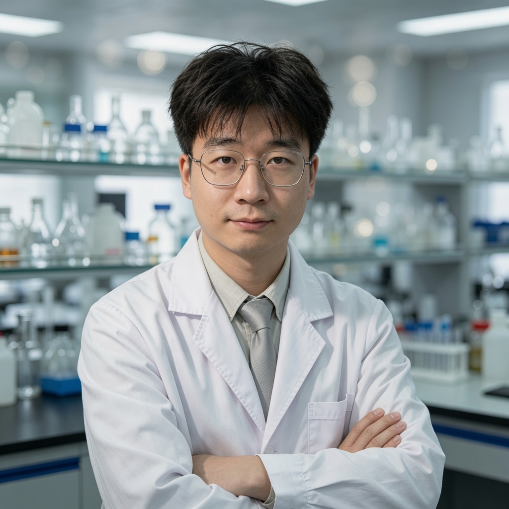

Doctoral Applicant • Bioinformatics • Multi-omics
Computational biology for the hidden systems of life.
I build bioinformatics methods and data platforms to understand transposable elements, genome regulation, and biologically meaningful patterns across complex omics data.

Current focus
TE activity, multi-omics databases, and translational bioinformatics.
Profile
A systems-oriented researcher working between computation and biology.
I am developing computational approaches to uncover how repetitive elements and multi-layered omics signals shape biological function, with a strong interest in both mechanistic understanding and practical scientific infrastructure.
My work combines mathematical modeling, statistical analysis, machine learning, and professional bioinformatics workflow development. I am particularly interested in turning difficult biological signals into interpretable systems that can support discovery, translation, and accessible research tools.
Research Focus
Three active directions in my current work.
Transposable elements in active brain systems
Using single-cell data to identify active TEs and TE-driven genes, and to understand how repetitive sequences shape brain function in bumblebees.
Multi-omics infrastructure for the research community
Improving and expanding iBumblebee as a practical database platform for bioinformatics, ecology, and insect research.
AI models for multimodal species identification
Designing deep learning and pan-genome informed models that integrate multiple data modalities for robust species-level classification.
Selected Work
Platforms and themes that define my applied research profile.
A public-facing multi-omics resource for bumblebee research
I contribute to the organization and optimization of the iBumblebee database so that complex genomic and omics resources become easier to access, reuse, and translate into broader biological insight.
Visit databaseWorkflow engineering
End-to-end analysis pipelines across genomics, transcriptomics, epigenomics, single-cell, and spatial omics.
Repeat sequence expertise
Identification, annotation, quantification, and systems analysis of transposable elements across eukaryotic genomes.
Capabilities
Technical depth built for both discovery and translation.
Quantitative modeling
Mathematical modeling, statistical analysis, machine learning, and deep learning.
Bioinformatics systems
Integrated pipelines across genome, transcriptome, epigenome, single-cell, and spatial datasets.
TE-focused analysis
Specialized expertise in repetitive sequence discovery, annotation, statistics, and interpretation.
Vision
Long-term research ambitions beyond current datasets.
Biomaterials and delivery systems
Methods and materials that improve delivery, function, and accessibility in biomedical settings.
Human-centered translational bioinformatics
Applying data-driven or material-driven strategies that reduce treatment burden and improve quality of life.
Synthetic biology and information systems
Generalizable cell factories and omics-informed models, especially those grounded in TE-based biological information.
Contact
Open to doctoral opportunities, collaboration, and research dialogue.
If you are interested in computational biology, transposable elements, multi-omics systems, or translational research directions, I would be glad to connect.